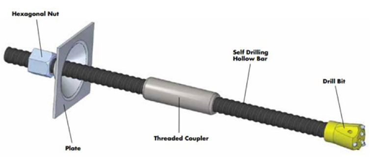
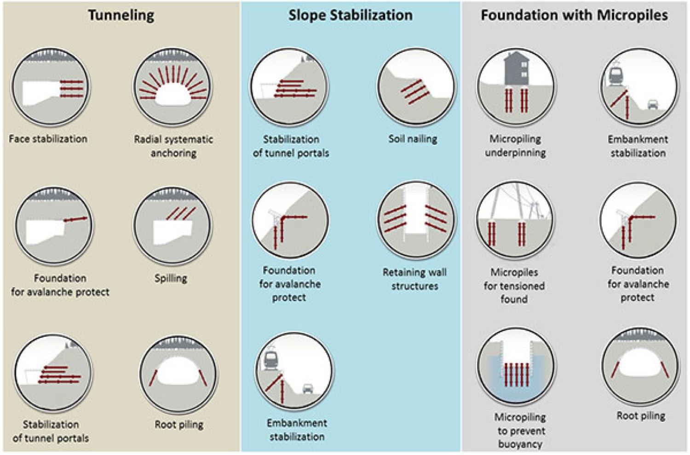

Self-drilling anchors are the advanced type of fully threaded hollow steel tube rods. SDA is a fully threaded rod with an inner and outer diameter hollow steel tube. It is provided with a sacrificial drill bit at the end to facilitate the drilling process, coupler to join two SDA bars, screw nut, base plate, etc. The hollow steel tube has one side sacrificial drill bit and, at another end, tied with nut and steel base plate. A hollow steel tube is placed in the center of the drill hole using a centralizer to maintain its position. The grout, which covers the SDA periphery, protects the SDA under aggressive environment conditions with simultaneous grout ground and grout bar interaction throughout the threaded bond length. Self-drilling sacrificial drill varies based on the rock or soil conditions.
The hollow steel tube has more bending strength and more circumference area compared to the solid steel bar (soil nail) with the same cross-sectional area. Due to these benefits of self-drilling anchor, it has advantages over other for reinforcing solid bars, soil nails, and rock anchors. SDA installation can be done by a small drilling machine that can move in difficult access areas and provide slope protection work in difficult reach. Its application, not just only application to soil and slope reinforcement, but also for tunnel application like forepoling for tunnel advancement.
Components of SDA
- Sacrificial Drill Bit
One of the main components in this technology is a sacrificial drill bit. It helps the drilling and inserting of SDA operation at the same time. This increases the productivity of the SDA installation. The sacrificial drill bit quality defines improving the SDA technique’s penetration rate, performance, and cost-efficiency.
- Hollow Bars
The rolling process enhances the yield strength of the steel. The fully threaded hollow bar allows drilling using a sacrificial drill bit at one end and another end to connect to the standard drill tool that works simultaneously for drilling and grouting. Full threading length of SDA makes it more beneficial to grate bonding to grout and tube and enable for drill rig connections and couplings.
- Couplers
The couplers’ main aim is to provide the connection between seating of each hollow tube face-to-face connection. This is the main component for the energy transmission from end to end connection of anchor and provides maximum percussive energy to drill bit with lesser losses.
- Bearing plates
Bearing plate with sufficient thickness of steel plates having a central hole required at the face of SDA. The main function of this plate is to transfer the tension load of SDA to the ground.
- Hexagonal nuts
The hexagonal nuts are made of high strength steel with properly made by all edges to satisfy the demands of anchor specifications and other operations.
- Shanks
SDA installation, rotary percussion process the rotation, and percussion transfer from the hammer to hollow bar system using the shank connector.
Installation of self-drilling anchors
To drive the hollow steel bar up to the desired depth based on the design requirement using rotary drilling. The cement grout is used to inject a self-drilling anchor, and the most common water-cement ratio of cement grout varies between 0.4 and 0.5. Then the injection process was carried out through the hollow steel tube.
Applications of Self-Drilling Anchors
- Slope stabilization
Self-Drilling Anchors are very suitable for weathered or un-consolidated rock stabilization. This technique is a more superior form of stabilization because the SDA technique is a relatively easy and fast method of installation compared to the outdated methods.
- Foundations with micro piles
SDAs can be used like monopoles and micropile types because these are drilled piles composed of steel reinforcement with injected grout. These anchors are used like micropile type to stabilize the ground and related foundation problems. These anchors are suitable for tension and compression loads at varying ground conditions.
- Tunneling
Self-drilling anchors are most suitable for the stabilization of tunnel strengthening works. Mostly for the soft rock and overburden soil conditions, the SDAs are apt for rooftop protection.

The above pictures describe the implementation of SDA as a reinforcing stabilization element for various works.